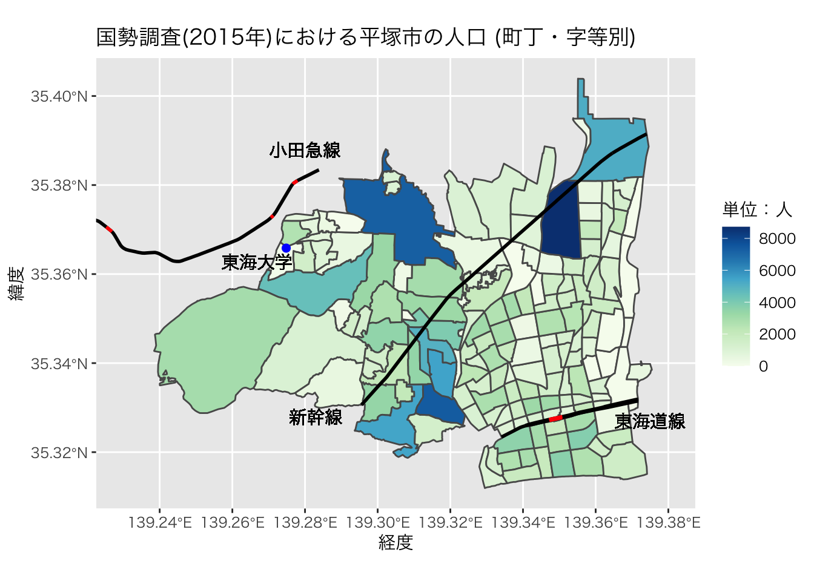
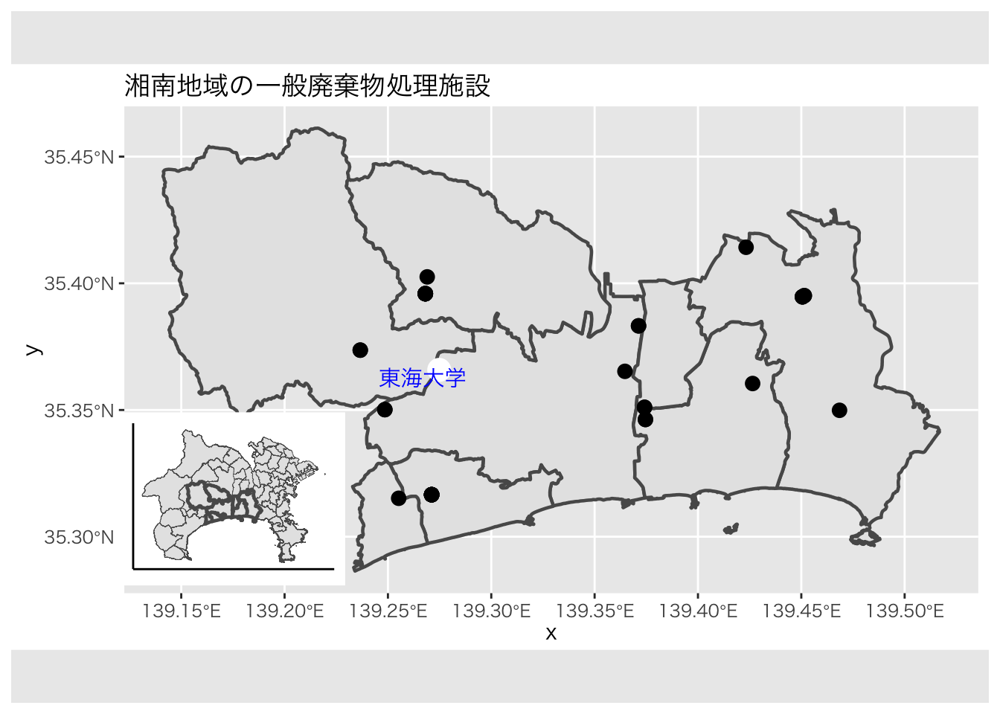

chapter: 5 可視化(2)：ggplot2による地図作成
空間的な広がりのあるデータを扱う際には、地図による可視化がデータの特徴を理解する上で大きな助けになります。グラフ描画に用いたggplot2を拡張することで様々な地図データを描画できることはRの魅力の一つです。
地図を使った描画には、位置情報の正確さをそれほど必要としない場合と地理的情報の精度が極めて情報な場合の２通りが考えられます。前者は、コロプレス図と呼ばれるいわゆる「白地図の塗り分け」のようなものが相当します。後者は、GISと呼ばれる地理情報科学の分野に近いケースで、「迷惑施設が県境付近に立地しやすい」という仮説を検証するなど、正確な地理情報が前提となる場合です。
5.1 パレットの追加
Rの中で簡単に追加できる色の組み合わせを提供しているpackageにRColorBrewerがあります。慣れてきたらこのカラーパレットを参考にして色を変えてみても良いでしょう。
# install.packages("RColorBrewer")
library(RColorBrewer)
display.brewer.all()
5.2 塗り分け地図の作成
はじめに日本の塗り分け地図をなるべく簡単に作成する方法を学びます。NipponMapというpackageでは見やすさを重視して、海岸線など一部を単純化しています。都道府県別の塗り分けなどは地理情報の精度よりも見やすさを優先すべきです。
なお、left_join関数は、left_join(A,B, by="C")であるとき、Cという列をキーにして、AにBの情報を追加する関数です。
#一回だけ以下のインストールが必要
#install.packages(c("NipponMap", "tidyverse"))
# ライブラリコマンドでの読み込みは毎回必要
library(readxl)
library(NipponMap)
library(sf)## Linking to GEOS 3.10.2, GDAL 3.4.2, PROJ 8.2.1; sf_use_s2() is TRUElibrary(tidyverse)## ── Attaching packages
## ──────────────────────────────────────────────────────────────────────────
## tidyverse 1.3.2 ──## ✔ tibble 3.1.8 ✔ stringr 1.4.1
## ✔ tidyr 1.2.0 ✔ forcats 0.5.2
## ✔ readr 2.1.2
## ── Conflicts ───────────────────────────────────────────────────────────────────────────── tidyverse_conflicts() ──
## ✖ psych::%+%() masks ggplot2::%+%()
## ✖ scales::alpha() masks psych::alpha(), ggplot2::alpha()
## ✖ readr::col_factor() masks scales::col_factor()
## ✖ scales::discard() masks purrr::discard()
## ✖ dplyr::filter() masks stats::filter()
## ✖ dplyr::lag() masks stats::lag()#ウェブサイトから直接ダウンロードする場合
url1<-"https://yamamoto-masashi.github.io/DSlec/20201028sample.xls"
download.file(url1,destfile="20201028sample.xls")
# エクセルファイルの読み込み
# ヘッダ部分を読み飛ばしている
# sheet=1を変更することで別のシートも読める
sampleDB<-readxl::read_excel("20201028sample.xls",skip=5,sheet=1)## New names:
## • `` -> `...1`
## • `` -> `...2`# 変数の対応関係
# A1101_総人口【人】
# A1301_15歳未満人口【人】
# A1303_65歳以上人口【人】
# B1101_ 総面積（北方地域及び竹島を除く）【ｈａ】
# B1103_ 可住地面積【ｈａ】
# B4107_ 雪日数（年間）【日】
# B4108_ 日照時間（年間）【時間】
# D110101_市町村数【‐】
# E6102_大学数【校】
# E6302_大学学生数【人】
# F610201_超過実労働時間数（男）【時間】
# F610202_超過実労働時間数（女）【時間】
# H110202_空き家数【戸】
# 列１と列２の名前を変更している。
names(sampleDB)[1:2]<-c("prefcode","prefnameJ")
# データと地図を結合する際にキーの型が同じ必要があるので
# 数値型を文字型に変更している。
sampleDB$prefcode<-as.character(sampleDB$prefcode)
# 地図の情報はNipponMapから取り出しています。
# この方法は以下で教えていただきました。
# https://ill-identified.hatenablog.com/entry/2020/12/07/134705
Nippon_map <- read_sf(system.file("shapes/jpn.shp", package = "NipponMap")[1],
crs = "+proj=longlat +datum=WGS84")
# 地図情報に総務省のデータベースを接続
mapDB<-left_join(Nippon_map,sampleDB, by=c("SP_ID"="prefcode"))
# 地図にプロット
ggplot(mapDB, aes(fill = B4107)) +
geom_sf() +
scale_fill_gradientn(colors=brewer.pal(9,"GnBu"))+
theme_gray (base_family = "HiraKakuPro-W3")+
labs(fill = "年間雪日数(日)")+
ggtitle("都道府県別の雪日数 (2018年)")
スペースの都合や見やすさという点で北海道と沖縄県を移動する場合があります。そのような地図もRで作成することができます。なお、この作図は「ジオメトリの移動による日本地図の可視化」を参考にして作成しました。
annotate()関数を使って、始点と終点を与えることで線を引くことができるので、その機能を使って、北海道と沖縄県を区別する線を加えます。
#ジオメトリの直接変更
#北海道の都道府県番号は１、沖縄県は47。
Nippon_map$geometry[1]=Nippon_map$geometry[1]+c(-11, -4)
Nippon_map$geometry[47]=Nippon_map$geometry[47]+c(12, 5)
#日本地図の描写
ggplot()+
geom_sf(data=Nippon_map, aes(fill=population/10000))+
scale_fill_gradientn(colors=brewer.pal(9,"GnBu"))+
annotate("segment", x=129, xend=134.2, y=37, yend=37,
color="gray", size=1)+
annotate("segment", x=134.2, xend=138.5, y=37, yend=41,
color="gray", size=1)+
annotate("segment", x=139.8, xend=141, y=32.2, yend=32.2,
color="gray", size=1)+
annotate("segment", x=138.5, xend=139.8, y=31, yend=32.2,
color="gray", size=1)+
labs(fill="万人", x="", y="",
caption="Nippomap")+
ggtitle("都道府県別人口")+
theme_bw(base_family = "HiraKakuPro-W3")
5.3 よりGISライクな地図の作成
以下では地理情報をできるだけ正確に扱った地図の描画について解説します。例として用いるデータは、2020年国勢調査の平塚市（小地域）です。このファイルは、
総務省統計局 >> 小地域 >> 国勢調査 >> 2020年 小地域 >> 世界測地系緯度経度・Shapefile >> 神奈川県 >> 平塚市
でダウンロードできます。
地図情報のうち、ベクターデータは、シェープファイルという形式で利用することがデフォルトになっています。シェープファイルとは、Esri社が開発したGIS用のデータフォーマットで、ポイントデータ(1組以上の緯度、経度情報)、ラインデータ(2組のポイントデータを結んだものの集まり)、ポリゴンデータ(ラインデータを結んだもの)を格納できます。
シェープファイルの拡張子は、.shpですが、シェープファイルはこのファイル単独では動作しません。データをダウンロードするときはついてくる複数のファイル（最低でも３つはある）を全て同じフォルダに保存するようにしてください。
library(sf)
map <- read_sf("Hiratsuka/r2ka14203.shp",
crs = "+proj=longlat +datum=WGS84") # 平塚市のシェープファイル
ggplot(map) + geom_sf()
各町丁・字等別の人口で塗り分けをしてみましょう。
ggplot(map) + geom_sf(aes(fill=JINKO))+
scale_fill_gradientn(colors=brewer.pal(9,"GnBu"))+
theme_gray (base_family = "HiraKakuPro-W3")+
labs(fill = "単位：人")+
ggtitle("国勢調査(2020年)における平塚市の人口 (町丁・字等別)")
さらに鉄道路線、大学の立地などを重ねてみましょう。
以下の例では、鉄道のデータを国土数値情報という国土交通省が運営しているウェブサイトからダウンロードして使っています。このサイトの「4.交通」の中にある「鉄道(ライン）」というデータを使用しています。なお年ごとに路線が変化しているため、国勢調査に合わせて2020年のデータを使用しています。
この鉄道データは全国のJR及び私鉄を全て含むので、このままプロットすると全国の全ての鉄道路線が表示されます。そのため平塚市の路線に限定する必要があります。
そこで使用しているが、st_intersectionという関数です。この関数を使うと二つの地理データに共通の部分だけを残すことができます。鉄道(ライン)データは駅の情報も含むため、駅も赤色で表示しています。
最後に東海大学の位置をannotate関数を使って東海大学の場所を、geom_text関数を使って、東海大学の名称を表示しました。これらの関数は緯度、経度を使って表示することができます。
trainline <- read_sf("Train/N02-20_RailroadSection.shp",
crs = "+proj=longlat +datum=WGS84") # 鉄道線路網のシェープファイル
trainstation <- read_sf("Train/N02-20_Station.shp",
crs = "+proj=longlat +datum=WGS84") # 鉄道駅のシェープファイル
# ポリゴンの頂点が重複していると新しいsfではエラーが出るので、
# s2をFALSEにしている
# https://stackoverflow.com/questions/68808238/how-to-fix-spherical-geometry-errors-caused-by-conversion-from-geos-to-s2
sf_use_s2(FALSE)
ggplot(map)+
geom_sf(aes(fill=JINKO))+
geom_sf(data=st_sf(geometry=st_intersection(st_union(map),st_union(trainline))),
color="black",size=1)+
geom_sf(data=st_sf(geometry=st_intersection(st_union(map),st_union(trainstation))),
color="red",size=1)+
annotate("point", x = 139.274823, y = 35.365831, colour = "blue", size=2)+
geom_text(aes(x = 139.266823, y = 35.362831), label = "東海大学",
family = "HiraKakuProN-W3")+
scale_fill_gradientn(colors=brewer.pal(9,"GnBu"))+
theme_gray (base_family = "HiraKakuPro-W3")+
labs(fill = "単位：人")+
xlab("経度")+ylab("緯度")+
ggtitle("国勢調査(2020年)における平塚市の人口 (町丁・字等別)") 
何か足りません。そうです。小田急線が描かれていないのです。その理由は、小田急線が平塚市内を通っていないためです。そこで鉄道ラインデータの切り出しの際にのみ、隣の秦野市のデータを加えて、小田急線を表示したいと思います。
HadMap <- read_sf("Hadano/r2ka14211.shp",
crs = "+proj=longlat +datum=WGS84") # 秦野市のシェープファイル
ggplot()+
geom_sf(data=map,aes(fill=JINKO))+
geom_sf(data=st_sf(geometry=st_intersection(st_union(map),st_union(trainline))),
color="black",size=1)+
geom_sf(data=st_sf(geometry=st_intersection(st_union(map),st_union(trainstation))),
color="red",size=1)+
geom_sf(data=st_sf(geometry=st_intersection(st_union(HadMap),st_union(trainline))),
color="black",size=1)+
geom_sf(data=st_sf(geometry=st_intersection(st_union(HadMap),st_union(trainstation))),
color="red",size=1)+
annotate("point", x = 139.274823, y = 35.365831, colour = "blue", size=2)+
geom_text(aes(x = 139.266823, y = 35.362831), label = "東海大学",
family = "HiraKakuProN-W3")+
geom_text(aes(x = 139.28, y = 35.388), label = "小田急線",
family = "HiraKakuProN-W3")+
geom_text(aes(x = 139.283, y = 35.328), label = "新幹線",
family = "HiraKakuProN-W3")+
geom_text(aes(x = 139.375, y = 35.327), label = "東海道線",
family = "HiraKakuProN-W3")+
scale_fill_gradientn(colors=brewer.pal(9,"GnBu"))+
theme_gray (base_family = "HiraKakuPro-W3")+
labs(fill = "単位：人")+
xlab("経度")+ylab("緯度")+
xlim(139.23,139.38)+
ggtitle("国勢調査(2020年)における平塚市の人口 (町丁・字等別)") 
続いて、地価公示のデータをプロットしてみよう。地価公示の詳細はこちらをご覧ください。
地価公示とは、地価公示法に基づいて、国土交通省土地鑑定委員会が、適正な地価の 形成に寄与するために、毎年1月1日時点における標準地の正常な価格を3月に公示 (約26,000地点で実施）するもので、社会・経済活動についての制度インフラとなって います。
主な役割
1.一般の土地の取引に対して指標を与えること
2.不動産鑑定の規準となること
3.公共事業用地の取得価格算定の規準となること
4.土地の相続評価および固定資産税評価についての基準となること
5.国土利用計画法による土地の価格審査の規準となること 等
位置情報のついた地価公示のデータは
国土数値情報 >> 1. 国土 >> 地価公示 (ポイント) >> 神奈川県 >> 令和4年
にアクセスすると入手できる。
以下では、地価の動向をみるために、より大きなスケールで可視化を行いたいので、ベースマップを平塚市から神奈川県に変更する。
#地価公示
KanagawaPrice<-read_sf("KanagawaLandPrice/L01-22_14.shp")
#地価を整数型に
KanagawaPrice$price<-as.integer(KanagawaPrice$L01_006)
# 用途が住宅のもののみに
KanagawaPrice %>%
filter(L01_027=="住宅") -> KanagawaPriceHome
#神奈川県の行政界
KanaSHP<-read_sf("KanagawaBorder/N03-22_14_220101.shp",
crs = "+proj=longlat +datum=WGS84") # 神奈川県のシェープファイル
ggplot() +
geom_sf(data=KanaSHP,fill="white")+
geom_sf(data=st_sf(geometry=st_intersection(st_union(KanaSHP),st_union(trainline))),
color="black",size=0.5)+
geom_sf(data=st_sf(geometry=st_intersection(st_union(KanaSHP),st_union(trainstation))),
color="red",size=0.5)+
geom_sf(data=KanagawaPriceHome,aes(color = price/1000),size=0.2)+
scale_color_gradientn(colors=brewer.pal(9,"YlOrRd"))+
theme_bw(base_family = "HiraKakuPro-W3")+
labs(color = "単位：千円/m^2")+
ggtitle("神奈川県の地価公示(令和4年)")
これをさらにヒートマップの形で表してみよう。
#install.packages("akima")
library(akima)
# sf objectから緯度経度を取り出す
KanaCoords<-st_coordinates(KanagawaPrice$geometry)
# XおよびYとして緯度経度を追加する（もっと美しいやり方あると思いますが）
KanaPrice<-cbind(KanagawaPrice,KanaCoords)
# ポイントデータを補間する
interpdf <-interp2xyz(interp(x=KanaPrice$X, y=KanaPrice$Y, z=KanaPrice$price/1000,
duplicate="mean"), data.frame=TRUE)
interpdf %>%
filter(!is.na(z)) %>%
tbl_df() %>%
ggplot() + geom_sf(data=KanaSHP)+
geom_contour(aes(x = x, y = y, z = z),color = "white", alpha = 1) +
geom_tile(aes(x = x, y = y, z = z, fill = z,alpha=0.5)) +
scale_fill_distiller(palette="Spectral", na.value="white") +
theme_gray(base_family = "HiraKakuPro-W3")+
labs(fill="単位：千円/m^2")+
guides(alpha=FALSE)+xlab("")+ylab("")+
ggtitle("神奈川県の地価公示(令和3年)")->p
print(p)
次に二つの地図を１枚の図としてプロットしてみよう。
使用するデータは一般廃棄物処理の施設立地のデータで以下でダウンロードできる。
国土数値情報 >> 3. 地域 >> 廃棄物処理施設 (ポイント) >> 神奈川県(平成24年)
はじめにそれぞれの地図を作成する。
library(cowplot)
setwd("~/R/bookdown/datalecture2022/")
# 産業廃棄物のデータの読み込み
KanaIndWaste<-read_sf("KanagawaWaste/P15-12_14_GML/P15-12_14_IndustrialWasteDisposalFacilities.shp",
options = c("encoding=CP932"),
crs="WGS84")
# 一般廃棄物のデータの読み込み
KanaMswWaste<-read_sf("KanagawaWaste/P15-12_14_GML/P15-12_14_GeneralWasteDisposalFacilities.shp",
options = c("encoding=CP932"),
crs="WGS84")
# 神奈川県のポリゴン
KanaMap<-read_sf("KanagawaBorder/N03-22_14_220101.shp",
options = c("encoding=CP932"),
crs="WGS84")
#湘南地域の選択
KanaMap |>
filter(N03_004 %in% c("平塚市","秦野市","伊勢原市","大磯町",
"二宮町","寒川町","藤沢市","茅ヶ崎市"))-> ShonanMap
#湘南地域の地図をShaMapと命名
ShoMap<-
geom_sf(data=ShonanMap, size=0.8)
#湘南地域の可視化
ggplot()+
geom_sf(data=KanaMap, size=0.1)+ShoMap+
theme(axis.ticks = element_blank(),
axis.text.x = element_blank(),
axis.text.y = element_blank())->ggm1
ggm1
#湘南地域の一般廃棄物処理施設の取り出し
# 秦野と伊勢原は２市で一部事務組合を組織して、共同で整備している。
KanaMswWaste %>%
filter(P15_002 %in% c("平塚市","秦野市伊勢原市環境衛生組合","大磯町",
"二宮町","寒川町","藤沢市","茅ヶ崎市")) -> ShonanMswMap
#平塚市の一般廃棄物施設の地図をHiratsukaMswMapと命名
ShoMswMap<-
geom_sf(data=ShonanMswMap, size=3)
#施設の可視化
ggplot()+
ShoMap+
ShoMswMap+
theme_gray (base_family = "HiraKakuPro-W3")+
annotate("point", x = 139.274823, y = 35.365831, colour = "white", size=5)+
geom_text(aes(x = 139.266823, y = 35.362831), label = "東海大学", color="blue",
family = "HiraKakuProN-W3")+
ggtitle("湘南地域の一般廃棄物処理施設")->ggm2
ggm2
最後に2つの地図を合わせる。
# Combining both maps
gg_inset_map1 = ggdraw() +
draw_plot(ggm2) +
draw_plot(ggm1, x = 0.10, y = 0.17, width = 0.25, height = 0.25)+
theme_gray (base_family = "HiraKakuPro-W3")
gg_inset_map1
この地図をみると廃棄物処理施設は、藤沢市の一部を除けば市町村境界に近い場所に立地しているようにもみえる。皆さんはどう思うだろうか？
5.4 世界地図の活用
Natural Earthというサイトに世界の地図データが無料でダウンロード可能である。以下では、rnaturalearthというpackageを使って、世界地図を描写する方法を紹介する。
library(sf)
library(tidyverse)
#install.packages("rnaturalearth")
#install.packages("rnaturalearthdata")
library(rnaturalearth) #Natural Earth
World_map<-
ne_countries(scale="medium",
returnclass="sf")
ggplot()+
geom_sf(data=World_map)
#最初の6行
World_map %>%
head()## Simple feature collection with 6 features and 63 fields
## Geometry type: MULTIPOLYGON
## Dimension: XY
## Bounding box: xmin: -70 ymin: -18 xmax: 75 ymax: 60
## CRS: +proj=longlat +datum=WGS84 +no_defs +ellps=WGS84 +towgs84=0,0,0
## scalerank featurecla labelrank sovereignt sov_a3 adm0_dif level type admin adm0_a3
## 0 3 Admin-0 country 5 Netherlands NL1 1 2 Country Aruba ABW
## 1 1 Admin-0 country 3 Afghanistan AFG 0 2 Sovereign country Afghanistan AFG
## 2 1 Admin-0 country 3 Angola AGO 0 2 Sovereign country Angola AGO
## 3 1 Admin-0 country 6 United Kingdom GB1 1 2 Dependency Anguilla AIA
## 4 1 Admin-0 country 6 Albania ALB 0 2 Sovereign country Albania ALB
## 5 3 Admin-0 country 6 Finland FI1 1 2 Country Aland ALD
## geou_dif geounit gu_a3 su_dif subunit su_a3 brk_diff name name_long brk_a3 brk_name
## 0 0 Aruba ABW 0 Aruba ABW 0 Aruba Aruba ABW Aruba
## 1 0 Afghanistan AFG 0 Afghanistan AFG 0 Afghanistan Afghanistan AFG Afghanistan
## 2 0 Angola AGO 0 Angola AGO 0 Angola Angola AGO Angola
## 3 0 Anguilla AIA 0 Anguilla AIA 0 Anguilla Anguilla AIA Anguilla
## 4 0 Albania ALB 0 Albania ALB 0 Albania Albania ALB Albania
## 5 0 Aland ALD 0 Aland ALD 0 Aland Aland Islands ALD Aland
## brk_group abbrev postal formal_en formal_fr note_adm0 note_brk name_sort name_alt mapcolor7
## 0 <NA> Aruba AW Aruba <NA> Neth. <NA> Aruba <NA> 4
## 1 <NA> Afg. AF Islamic State of Afghanistan <NA> <NA> <NA> Afghanistan <NA> 5
## 2 <NA> Ang. AO People's Republic of Angola <NA> <NA> <NA> Angola <NA> 3
## 3 <NA> Ang. AI <NA> <NA> U.K. <NA> Anguilla <NA> 6
## 4 <NA> Alb. AL Republic of Albania <NA> <NA> <NA> Albania <NA> 1
## 5 <NA> Aland AI Åland Islands <NA> Fin. <NA> Aland <NA> 4
## mapcolor8 mapcolor9 mapcolor13 pop_est gdp_md_est pop_year lastcensus gdp_year economy
## 0 2 2 9 1.0e+05 2258 NA 2010 NA 6. Developing region
## 1 6 8 7 2.8e+07 22270 NA 1979 NA 7. Least developed region
## 2 2 6 1 1.3e+07 110300 NA 1970 NA 7. Least developed region
## 3 6 6 3 1.4e+04 109 NA NA NA 6. Developing region
## 4 4 1 6 3.6e+06 21810 NA 2001 NA 6. Developing region
## 5 1 4 6 2.7e+04 1563 NA NA NA 2. Developed region: nonG7
## income_grp wikipedia fips_10 iso_a2 iso_a3 iso_n3 un_a3 wb_a2 wb_a3 woe_id adm0_a3_is adm0_a3_us
## 0 2. High income: nonOECD NA <NA> AW ABW 533 533 AW ABW NA ABW ABW
## 1 5. Low income NA <NA> AF AFG 004 004 AF AFG NA AFG AFG
## 2 3. Upper middle income NA <NA> AO AGO 024 024 AO AGO NA AGO AGO
## 3 3. Upper middle income NA <NA> AI AIA 660 660 <NA> <NA> NA AIA AIA
## 4 4. Lower middle income NA <NA> AL ALB 008 008 AL ALB NA ALB ALB
## 5 1. High income: OECD NA <NA> AX ALA 248 248 <NA> <NA> NA ALA ALD
## adm0_a3_un adm0_a3_wb continent region_un subregion region_wb name_len long_len
## 0 NA NA North America Americas Caribbean Latin America & Caribbean 5 5
## 1 NA NA Asia Asia Southern Asia South Asia 11 11
## 2 NA NA Africa Africa Middle Africa Sub-Saharan Africa 6 6
## 3 NA NA North America Americas Caribbean Latin America & Caribbean 8 8
## 4 NA NA Europe Europe Southern Europe Europe & Central Asia 7 7
## 5 NA NA Europe Europe Northern Europe Europe & Central Asia 5 13
## abbrev_len tiny homepart geometry
## 0 5 4 NA MULTIPOLYGON (((-70 12, -70...
## 1 4 NA 1 MULTIPOLYGON (((75 37, 75 3...
## 2 4 NA 1 MULTIPOLYGON (((14 -5.9, 14...
## 3 4 NA NA MULTIPOLYGON (((-63 18, -63...
## 4 4 NA 1 MULTIPOLYGON (((20 43, 20 4...
## 5 5 5 NA MULTIPOLYGON (((21 60, 21 6...5.4.1 世界地図を利用した可視化
所得階層別の塗り分け
ggplot()+
geom_sf(data=World_map, aes(fill=income_grp),
color="white", size=0.001)+
labs(fill="所得グループ",
caption="出典：Natural Earth")+
ggtitle("世界の所得分布")+
theme_bw(base_family = "HiraKakuPro-W3")+
theme(legend.position="bottom")+
guides(fill=guide_legend(nrow=2))
世界地図に用いられる投影法の1つであるロビンソン図法（Robinson projection）を用いた可視化。
ggplot()+
geom_sf(data=World_map, aes(fill=income_grp),
color="white", size=0.001)+
scale_fill_brewer(palette = "PuBu",direction=-1)+ # direction=-1でパレットが逆順に
labs(fill="所得グループ",
caption="出典：Natural Earth")+
ggtitle("世界の所得分布（ロビンソン図法）")+
theme_bw(base_family = "HiraKakuPro-W3")+
coord_sf(crs=st_crs("ESRI:54030"))+
theme(legend.position="bottom")+
guides(fill=guide_legend(nrow=2))
5.4.2 世界銀行データの可視化
世界銀行の公開データは、World Bank Open Dataというサイトでアクセスできる。このサイトを眺めるだけでも多くの情報を得ることができるので、開発問題に興味がある場合はアクセスしてみよう。このサイトの情報は膨大であるため、WDIというpackageを用いてデータにアクセスするのが効率的である。
なお、自分が探しているindicatorのIDを探す場合は、このサイトを参照のこと。
#install.packages("WDI")
library(WDI)
#使用する指標
CO2percapita<-
WDI(indicator="EN.ATM.CO2E.PC", extra=TRUE,
start=2015, end=2015)
#列名の変更
CO2percapita %>%
rename(CO2pc=EN.ATM.CO2E.PC) ->
CO2percapita
#地図データと世界銀行データの結合
CO2pc_map<-
left_join(World_map, CO2percapita, by=c("iso_a3"="iso3c"))
#南極大陸削除(好み)
CO2pc_map %>%
filter(iso_a3!="ATA") ->
CO2pc_map
#地図の描写
ggplot()+
geom_sf(data=CO2pc_map, aes(fill=CO2pc),
color="white", size=0.001)+
scale_fill_gradientn(colors=brewer.pal(5,"PuBu"))+
labs(fill="トン/人",
caption="出典：Natural Earth, The World Bank")+
ggtitle("一人あたりCO2排出量（2015年）")+
coord_sf(crs=st_crs("ESRI:54030"))+
theme_bw(base_family = "HiraKakuPro-W3")+
theme(legend.position="bottom")
5.5 さらに学びたい人へ
このチャプターの内容の多くは、Rによる地理空間データの可視化を参照しています。このサイトではこの他にもたくさんの美しい地図の作成方法が解説されていますので、地図を用いた分析を行いたい場合は必ず確認しましょう。
また、ここに特定の市町村を選んで、さらに分析を加えた例を掲載しています。地域の分析に興味のある人は試してみてください。